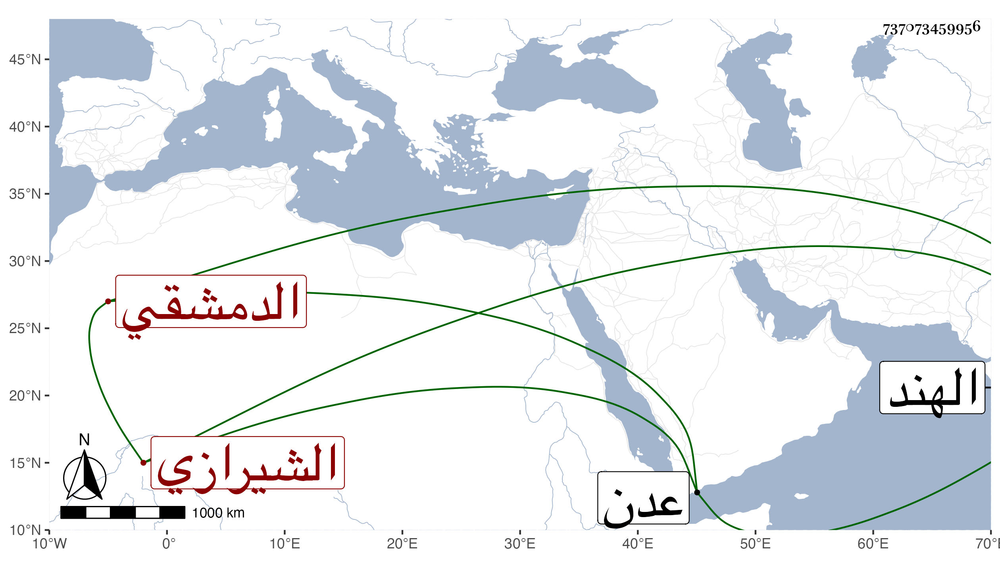

0902Sakhawi.DawLamic.ITO20230111-ara1.EIS1600.737073459956
Biography ID: 737073459956
220
عبد الرحمن بن حيدر بن علي بن أبي بكر بن عمر أصيل الدين أبو المعالي ابن القطب الدهقلي الشيرازي الأصل ثم الدمشقي . ولد في شعبان سنة سبع وأربعين وسبعمائة وسمع من البناني وست العرب حفيدة الفخر والبدر أبي العباس بن الجوخي وابن أميلة فعلى الأول جزء البيتوتة وحياة الأنبياء في قبورهم للبيهقي وعلى الثانية مشيخة جدها وعلى الثالث سنن النسائي ، وأجاز له العز بن جماعة وإبراهيم بن الخشاب وعلى الزرندي وحدث سمع منه الأئمة ولقيه شيخنا بعدن فأخذ عنه وذكره في معجمه وقال إن مولده سنة خمس وأربعين ، والأول هو الذي ذكره التقي بن فهد في معجمه وكأنه أصح . مات في سنة سبع عشرة ببعض جزائر كنباية من بلاد الهند ، وذكره المقريزي في عقوده تبعا لشيخنا .
